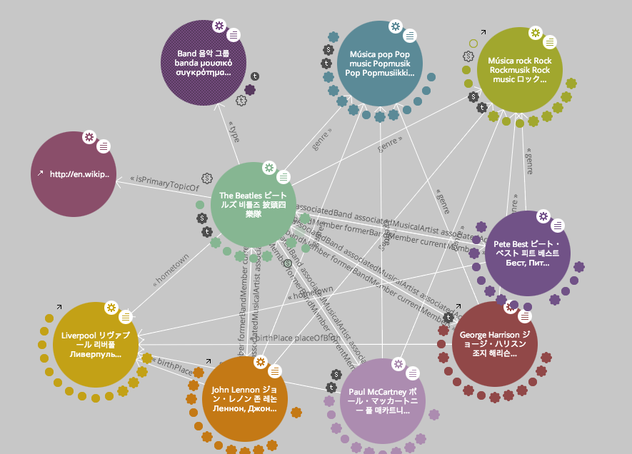
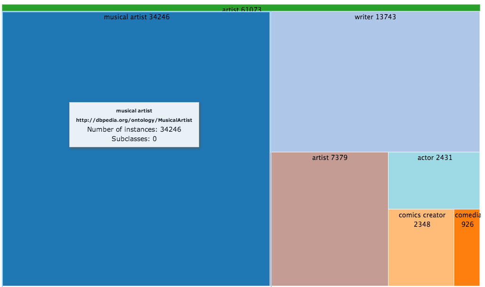

There are other tools available for the visualization of Linked Data. LOD live [13] provides a graph visualization of Linked Data resources. Clicking on the nodes can expand the graph structure. LOD live can be used for live access to SPARQL endpoints. LOD visualization [14] can produce visual hierarchies using treemaps and trees from live access to a SPARQL endpoint.

Figure 30: LOD live [13] and LOD visualization [14] tools.